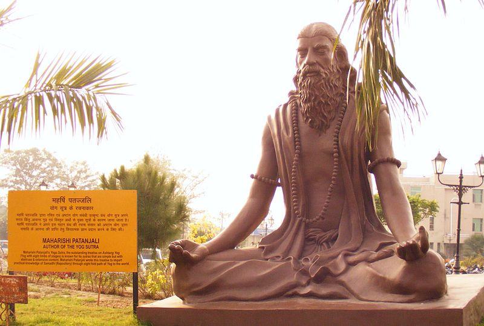

“Yoga is the restraint of the fluctuations of the mind” — Patanjali

The Yoga Sutras of Patanjali are a foundational text of the yogic tradition, offering guidance on how to cultivate a state of equanimity and inner peace through various practices and techniques.
As Patanjali wrote in the opening lines of the text, “Now, the teachings of yoga” - inviting readers to embark on a journey of self-discovery and spiritual growth.
The Yoga Sutras of Patanjali describe various concepts that relate to the acquisition and processing of knowledge, memory, and states of consciousness. These concepts are known as chitta-vritis, or fluctuations of the mind.
Here are five key chitta-vritis to know and actionable insights to apply them in your daily life:
Pramana (प्रमाण): This concept refers to valid knowledge or reliable means of acquiring knowledge.
To cultivate pramana, focus on developing your powers of observation, logical deduction, and critical thinking. Seek out reliable sources of information and be mindful of biases that may influence your understanding of a topic.
Smriti (स्मृति): This concept refers to memory or the ability to retain information.
To improve your memory, engage in activities that challenge your brain, such as learning a new language or skill. Practice recalling information without relying on external aids such as notes or technology.
Nidra (निद्रा): This concept refers to sleep or the state of unconsciousness.
To improve your quality of sleep, establish a regular sleep schedule, create a calming bedtime routine, and optimize your sleep environment for comfort and relaxation. Consider incorporating yoga nidra or other relaxation techniques to deepen your sleep and promote overall well-being.
Vikalpa (विकल्प): This concept refers to imagination or the ability to create mental constructs.
To use vikalpa effectively, cultivate a balanced approach to imagination that combines creativity with critical thinking. Be aware of how your thoughts and beliefs influence your perceptions of reality and use your imagination to generate positive outcomes and solutions to challenges.
Viparyaya (विपर्यय): This concept refers to mistaken understanding or incorrect knowledge.
To avoid viparyaya, practice self-awareness and examine your beliefs and assumptions regularly. Be open to new information and perspectives and challenge your own biases and limitations to deepen your understanding of yourself and the world around you.
As Patanjali wrote in the Yoga Sutras, “When the mind is still, then there is yoga” - emphasizing the importance of cultivating a state of inner calm and clarity as a means to connect with our true nature and achieve a state of union with the divine.
By incorporating these chitta-vritis into our daily practice, we can bring ourselves closer to this state of union and experience greater peace, happiness, and fulfillment in our lives.